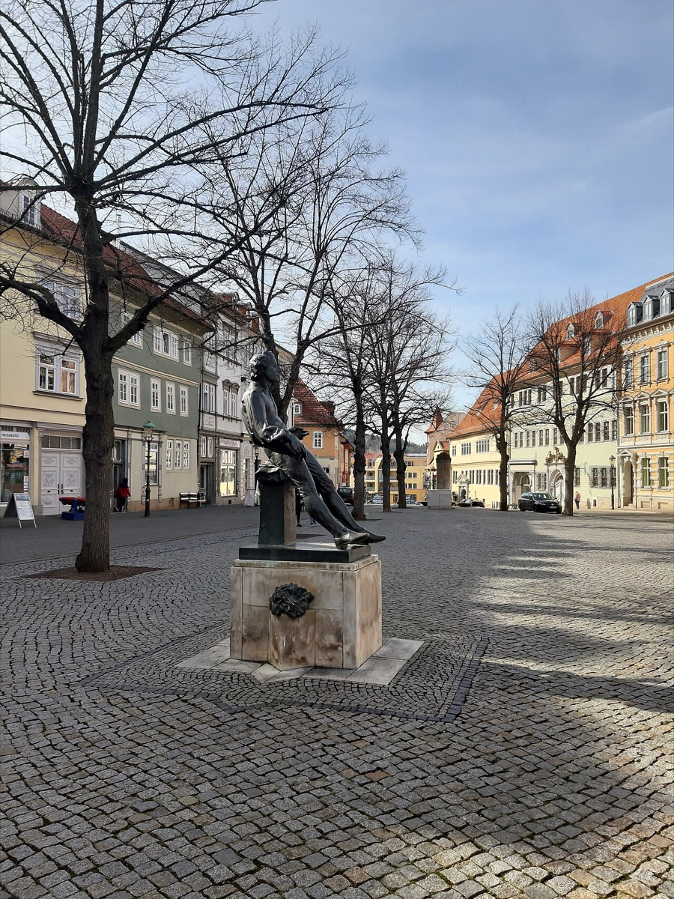

'Strange variations... foreign tones': the consistory hearings

On 21 February 1706 the Arnstadt consistory summoned its organist to explain himself, and the session opened with the obvious matter: he had taken four months on four weeks' leave. But the minutes move swiftly past the absence to the deeper grievance, and in doing so they produced what has become the most quoted job-performance review in the history of music. The complaint was his playing. Bach, the committee recorded, had been making "many curious variations in the chorale, and mingled many foreign tones in it, so that the congregation has been confused by it."
Read that sentence musically rather than administratively, and it becomes priceless. Through the scandalized committee prose we are hearing the young Bach's harmonic imagination hitting a provincial congregation at full force — the chromatic passing tones, the unexpected reharmonizations, the strange voice-leading that turned familiar hymns into something no one in the pews had bargained for. This is exactly the vocabulary that, tamed and perfected over the following decades, makes the mature chorale settings the textbook of Western harmony; generations of theory students have learned the discipline's rules from harmonizations whose first documented audience filed a complaint about them. The congregation was not wrong that something strange was happening in the organ loft. They were simply the first people ever to hear it, and confusion was a reasonable response to a harmonic future arriving without warning.
The rest of the file fills out a portrait of pure, almost comic intransigence. Told to stop preluding at such length, Bach had responded by playing absurdly short — obedience weaponized into insolence. Pressed on his continuing refusal to rehearse with the student choir, he did not apologize; he let it be known that no proper director had been provided, and that until one was, the rehearsals were not his problem. The era essay's summary is exact: charged with confusing the congregation, he answered his employers with barely veiled contempt, and to the choir complaint he offered conditions instead of apologies. Here was a twenty-one-year-old who knew — correctly, as history would confirm — that he understood music better than anyone judging him, and who had not yet learned that being right was insufficient. The consistory, for its part, was not villainous; the minutes record a body doing its institutional duty, patiently, in the face of a subordinate who conceded nothing.
A November session that same year added the era's romantic footnote. The organist, the record notes, had lately "made music" in the choir loft with an "unfamiliar maiden" — a frembde Jungfer. Tradition identifies her, plausibly but without proof, as Maria Barbara Bach, his cousin, then living in Arnstadt, whom he married the following year. The card keeps the two layers of certainty separate, as the timeline's honesty policy requires: the citation itself is documented — an unauthorized woman made music in the loft and the consistory minuted it — while the identification is tradition. If the tradition is right, the one courtship of Bach's youth survives in the record only as a disciplinary entry, which is somehow the most Arnstadt fact of all.
This card is where the timeline's craft and positions tracks cross exactly, and the crossing is the point. The same qualities appear on both sides of the ledger, inseparable: the independence that made him ungovernable as an employee is the independence that made the music unprecedented; the foreign tones and the refused rehearsals come from one and the same refusal to accept anyone else's ceiling. Every subsequent employer — Mühlhausen, Weimar, Cöthen, Leipzig — would buy both halves of the package, whether they understood the bargain or not. Arnstadt was merely the first to discover that there was no way to order the confusion out of the chorales without ordering the genius out of the organist. By the end of 1706 both sides had exhausted their patience, and when the organist's post at Mühlhausen fell vacant that year, the exit presented itself to a young man already halfway out the door.
Continue with the era essay: Arnstadt: the difficult young genius, or take the exit with him: the Mühlhausen appointment of 1707.
Arnstadt consistory proceedings, Feb & Nov 1706 (New Bach Reader)
Wolff, The Learned Musician, ch. 4
→ full bibliography & links